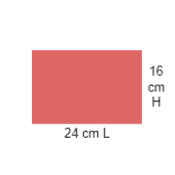
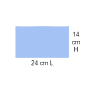

Les Différents formats de châssis

Format "Figure"
Le format figure est un format verticale, souvent utilisé pour les peintures de portrait

Format "Paysage"
Le format paysage est un format horizontale, souvent utilisé pour les peintures de paysage

Format "Marine"
Le format marine est un format également horizontale mais d'avantage panoramique que le format paysage.
| N° | Figure (cm) | Paysage (cm) | Marine (cm) |
|---|---|---|---|
| 0 | 18 x 14 | 18 x 12 | 18 x 10 |
| 1 | 22 x 16 | 22 x 14 | 22 x 12 |
| 2 | 24 x 19 | 24 x 16 | 24 x 14 |
| 3 | 27 x 22 | 27 x 19 | 27 x 16 |
| 4 | 33 x 24 | 33 x 22 | 33 x 19 |
| 5 | 35 x 27 | 35 x 24 | 35 x 22 |
| 6 | 41 x 33 | 41 x 27 | 41 x 24 |
| 8 | 46 x 38 | 46 x 33 | 46 x 27 |
| 10 | 55 x 46 | 55 x 38 | 55 x 33 |
| 12 | 61 x 50 | 61 x 46 | 61 x 38 |
| 15 | 65 x 54 | 65 x 50 | 65 x 46 |
| 20 | 73 x 60 | 73 x 54 | 73 x 50 |
| 25 | 81 x 65 | 81 x 60 | 81 x 54 |
| 30 | 92 x 73 | 92 x 65 | 92 x 60 |
| 40 | 100 x 81 | 100 x 73 | 100 x 65 |
| 50 | 116 x 89 | 116 x 81 | 116 x 73 |
| 60 | 130 x 97 | 130 x 89 | 130 x 81 |
| 80 | 146 x 114 | 149 x 97 | 146 x 89 |
| 100 | 162 x 130 | 162 x 114 | 162 x 97 |
| 120 | 195 x 130 | 195 x 114 | 195 x 97 |